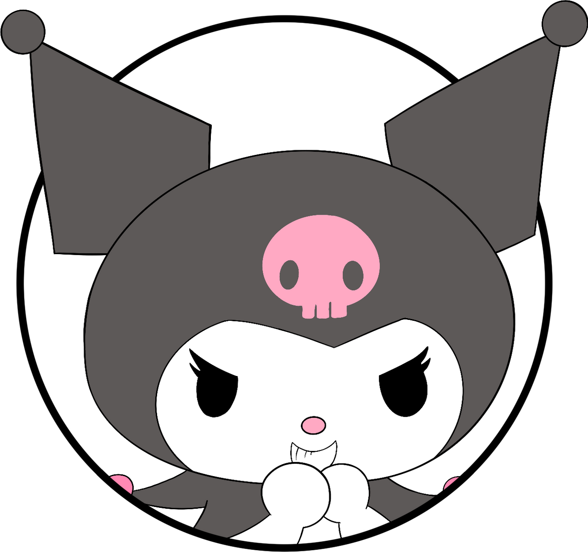

Você está lendo "Lágrimas Sobre Flores Murchas"

Lágrimas Sobre Flores Murchas
Selecione o Capítulo:
Selecione um capítulo
Capítulo 55
Capítulo 54
Capítulo 53
Capítulo 52
Capítulo 51
Capítulo 50
Capítulo 49
Capítulo 48
Capítulo 47
Capítulo 46
Capítulo 45
Capítulo 44
Capítulo 43
Capítulo 42
Capítulo 41
Capítulo 40
Capítulo 39
Capítulo 38
Capítulo 37
Capítulo 36
Capítulo 35
Capítulo 34
Capítulo 33
Capítulo 32
Capítulo 31
Capítulo 30
Capítulo 29
Capítulo 28
Capítulo 27
Capítulo 26
Capítulo 25
Capítulo 24
Capítulo 23
Capítulo 22
Capítulo 21
Capítulo 20
Capítulo 19
Capítulo 18
Capítulo 17
Capítulo 16
Capítulo 15
Capítulo 14
Capítulo 13
Capítulo 12
Capítulo 11
Capítulo 10
Capítulo 9
Capítulo 8
Capítulo 7
Capítulo 6
Capítulo 5
Capítulo 4
Capítulo 3
Capítulo 2
Capítulo 1